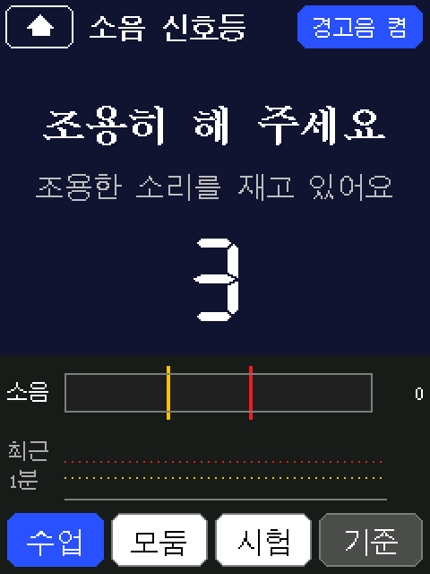

어디로 갈까요
연수 중에도, 끝난 뒤에도 같은 주소에서 다 찾을 수 있습니다.
세 번의 흐름
한 번에 한 칸씩. 마지막에는 첫 화면에서 세 기능을 골라 쓰는 기기 하나가 됩니다.
1보드에 올린다
시작 코드를 올리고, AI에게 바꿀 줄만 받아 지뢰찾기를 고칩니다.
2센서를 읽는다
보드에 들어 있는 마이크로 교실 소리를 재서 화면 색으로 보여 줍니다.
완성된 보드 화면 미리 보기
세 번 뒤의 모습입니다. 실제 코드로 그린 화면이에요.
ClassHelper.ino

🏠 첫 화면기능 고르기 · 설정
app_mine.h

💣 지뢰찾기1차시 · 바꿀 줄만 받아 고치기
app_noise.h

🚦 소음 신호등2차시 · 마이크 → 화면 색 · 경고음
app_noise.h

🎯 기준 맞추기2차시 · 조용할 때 3초
app_presenter.h

▶️ 넘기기3차시 · ◀ ▶ · 처음부터 · 번호로 가기
app_presenter.h

🖊️ 포인터3차시 · 레이저 · 펜 · 터치패드
app_presenter.h

🔊 화면·소리3차시 · 검은 화면 · PC 볼륨
app_presenter.h

⏱️ 타이머3차시 · PC 없이도 작동
가져가서 해 보기
연수에서 배운 방법 그대로, 보드 없이도 이어 갈 수 있습니다.
연수 중 약속
- 학생 이름, 성적, 연락처 같은 개인정보는 AI에게 적지 않습니다.
- AI가 준 코드는 틀릴 때가 있습니다. 보드에 올려서 직접 눌러 확인합니다.
- 고치는 곳은 앱 파일 하나. 다른 탭은 건드리지 않습니다.
- 두 번 해도 안 되면 워크벤치의 완성 코드로 바꾸고 다음으로 넘어갑니다.
- 수업에 쓰는 기기의 책임은 교사에게 있습니다. 경고음 크기와 깜빡임이 학생에게 괜찮은지 봅니다.
연수가 끝난 뒤에도
보드와 코드는 연수가 끝나도 그대로 내 것입니다. 첫 화면 → 설정의 켜면 바로 시작을 [발표]로 두면 꽂자마자 프레젠터가 켜집니다.
소음 신호등 기준을 우리 반 소리에 맞추고, 프레젠터에 바로가기 장을 더해 보세요. 막히면 AI에게 물어보면 됩니다. 이제 묻는 법을 아니까요.